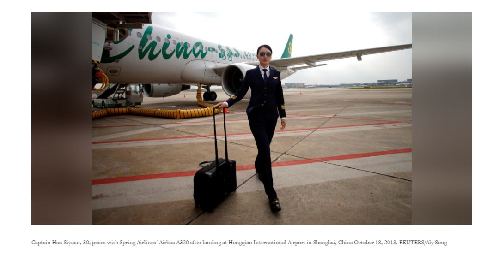
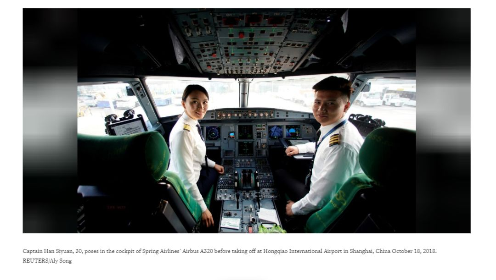
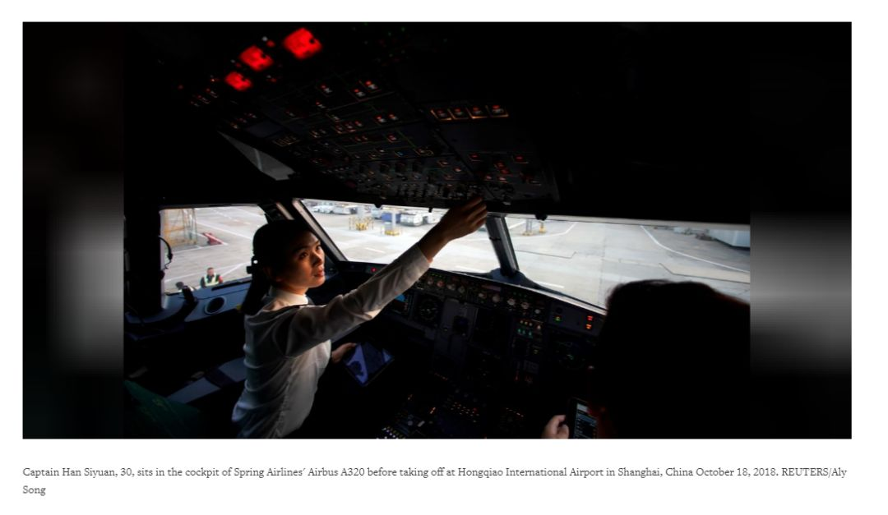
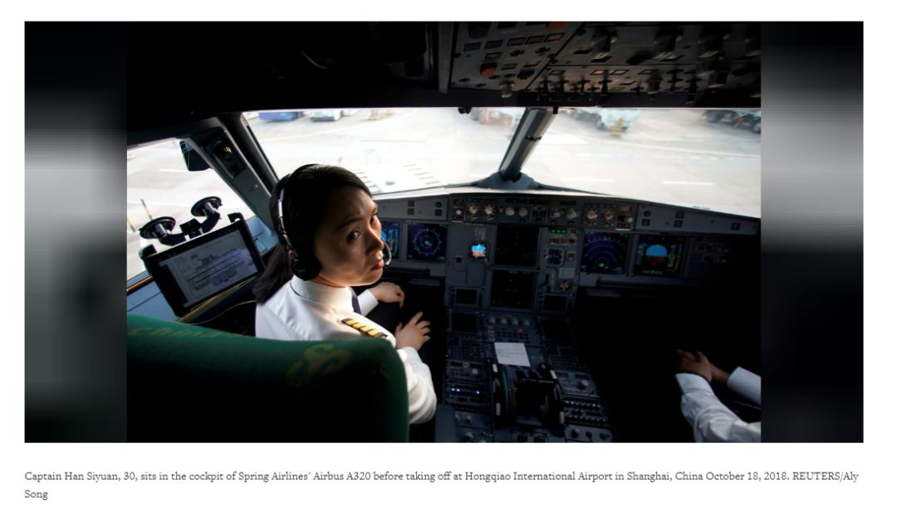
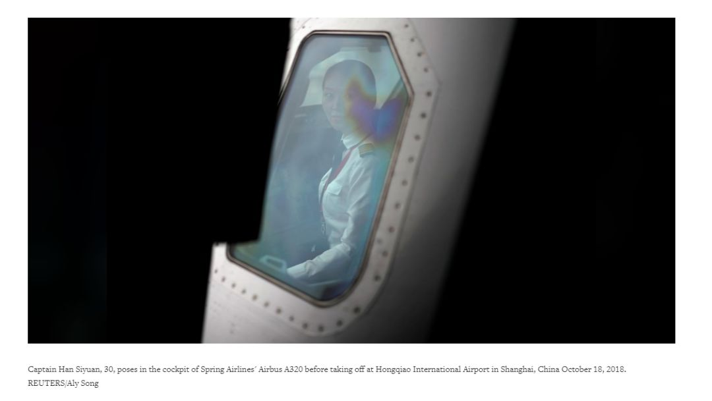

中国女飞行员正力争属于她们的半边天
2008年，韩思圆报考当年飞行员学员选拔考试，有400个女孩子与她竞争同一机会。她们一同接受从英文指令到腿长等方方面面的检查和测试。最终结果是，韩成为当年上海航空公司在这所大学录取的唯一学员。现如今，韩已成为一名廉价航空公司的机长，但是对于想成为飞行员的女孩们来说，这条路依旧充满困难。
截止2007年，中国持有航线运输驾驶执照的女飞行员有713人，而男飞行员有55,052人。在上海春秋航空公司的800名飞行员中，女性飞行员仅有6人。
对此韩表示：“我已经习惯了生活在男人的世界里”。中国女飞行员占比1.3%，是最低的国家之一。分析师和飞行员都认为应把这个现象归因于社会传统职业观念，以及航空领域以男性为主的招聘方式。

随着旅游业高速发展，中国航空业正面临着严重的飞行人才短缺，女飞行员们正努力引导公众认识到飞行员男女性别比例悬殊的问题。
据波音公司预计，中国航空公司在未来二十年中，需要128,000名新飞行员。而飞行员短缺迫使航空公司招聘外籍飞行员，也使得国内监管机构降低飞行员的准入门槛。
在国外学过飞行的上海律师陈静娴（音）在努力改变现在的状况，她说：“我们的使命是为后来人减少在成为飞行员的道路上阻碍，我希望可以让她们走的轻松一点。”

（韩思圆，30岁，机长，与春秋航空A320喷气式客机合影于上海虹桥机场降落区域，
中国上海，路透社，吴爱玲摄）
不仅在中国存在飞行员性别比例悬殊问题，在日本和韩国，女飞行员的占比也少于3%。这些地区认为女性从事飞行工作不符合传统观念。但印度完全相反，即使中国航空市场发展迅速，但印度得益于积极的招聘政策和日托等支持工作，女飞行员占比为12%，居世界前列。
在中国，飞行员只从大学和军队招收，而且只招收男性，极少数情况下才可能招收女性。此外，政策上不允许私用飞机驾照转航线运输驾驶执照或商用飞机驾照，这与美国等国外市场不同。

中国通用航空部民航管理研究所副所长李海鹏表示，很多航空公司因为产假制度带来的不良影响拒绝招收女飞行员。2015年独生子女政策改变之后，这种情况加剧。男飞行员不用面对生育期间及生育后两年无法飞行的困境。二胎政策实施后，若女飞行员生二胎，则有五年左右的时间无法飞行，这致使航空公司更加不愿意招收和培训女飞行员。
他表示，在中国，只有中国国航，东方航空，南方航空在尽力招募女飞行员，而其它航空公司则还是主要招收男飞行员，”对此，东方航空及南方航空拒绝发表评论，而中国航空并未回应本社消息。

飞行员们表示飞行员招收标准都是航空公司制定，并且似乎不受国家监管机构的干预，而中国民航管理部门的招聘要求并没有限定性别。厦门航空（南方航空子公司）透露，他们为公司怀孕职工提供长达540天的产假，且从2008年就开始招募女飞行员，期间中断几年后于去年重新开始招收女飞行员。
据了解，厦门航空2700名飞行员中有18名女性，还有18名女性学员正在接受培训。厦门航空公司发言人表示，“让更多女性飞行员进入无疑是补充（航空公司）飞行能力的良好途径。

最强烈的变革呼声主要来自中国女飞行员，这要归功于一大批海归，她们在美国等国家居住时学会了飞行。
据媒体报道，今年三月，中国航空公司飞行员协会（ChALPA）在中国人民解放军及各航空公司活动中成立了女性分会，担任分会副主席的陈一冰（音）律师表示，她和其它会员一直试图通过在珠海航展上进行讨论，来让大家关注这个问题。该组织的最终目的是说服中国航空公司调整招聘策略，包括招聘和产假制度。她还补充说到，解决这个问题的另一个主要障碍是私用飞机驾照无法飞商用航线的问题。“当然，这是个系统问题，我们希望改变可以在三到五年内发生，但这不是由我们决定的。”

韩思圆最近一直出现在春秋航空的宣传片中，她希望通过这种方式提高公众对这一系列问题的认识，“我无法直接给予女性成为飞行员的机会，但我希望用我的力量帮助航空公司、还有那些有蓝天梦的女孩子们打开未来的大门。”
来源：路透社
报导： Brenda Goh
补充报导： Heekyong Yang -首尔, RitsukoAndo -东京, JamieFreed -新加坡，上海新闻编辑室
编辑： Gerry Doyle
翻译： 村长
校对： 白纸